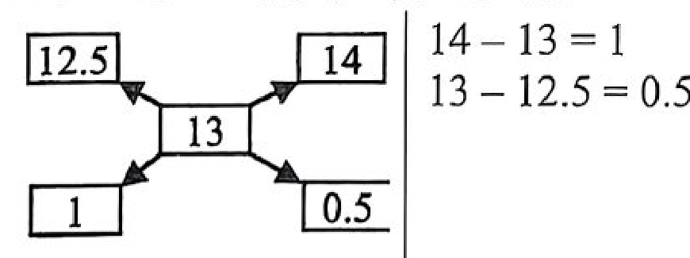

বাংলাদেশ কেমিক্যাল ইন্ডাস্ট্রিজ কর্পোরেশন (বিসিআইসি) • পদ: সহকারী ব্যবস্থাপক (প্রশাসন) • পূর্ণমান: ১০০ • সময়: ১ ঘণ্টা
📊 বিষয়ভিত্তিক প্রশ্ন বণ্টন ও বিশ্লেষণ ছক
বিষয়
প্রশ্ন সংখ্যা
গুরুত্বপূর্ণ টপিক ও ক্ষেত্রসমূহ
বাংলা ভাষা ও সাহিত্য
২০
তুর্কি শব্দ, স্বরবর্ণ ঋ, ক্ষ যুক্তবর্ণ, বাগধারা ও দ্বিরুক্ত শব্দ, দন্ত্য স বানান, কৃৎ প্রত্যয়, চলিত ভাষার উৎস (নদীয়া), দিগদর্শন সাময়িকী, বিসর্গ সন্ধি, উপসর্গ, শ্রীকৃষ্ণকীর্তন, আইন-ই-আকবরী, দ্বন্দ্ব সমাস, যুগসন্ধির কবি ঈশ্বরচন্দ্র গুপ্ত, চতুরঙ্গ উপন্যাস, বাংলা গদ্যের প্রথম মুদ্রিত গ্রন্থ
English Language & Literature
২০
Idioms & phrases (see eye to eye, cut and dried, dark horse, a dime a dozen, cut a sorry figure), Sentence error detection (Pronoun agreement, Infinitive, Modifiers, Parallelism), Analogies (Dispute:Mediation, Curiosity:Know, Frugal:Miserly, Evanescent:Disappear, Sage:Wisdom), Spellings (Equanimity, Forecast, Chancellery, Surveillance, Lackadaisical)
গণিত (Mathematical Reasoning)
২০
Efficiency & Daily wage, Savings percentage, Radical equation, Profit & Loss (cost = selling price), Fractions, Multi-printer working rate, Median of consecutive integers, Population depreciation, Map scale & distance, Alligation mixture, Two-digit number reversal, Averages, Algebraic ratios & identities
সাধারণ জ্ঞান ও বিজ্ঞান (GK & Science)
২০
Polynesian geography (Vanuatu), FIFA Club World Cup 2025 (USA), Sovereign debt default (Sri Lanka), Weapons-grade Uranium enrichment (90%), Invisible Hand (Adam Smith), Iraqi Kurdistan, Solar Orbiter (Sun's south pole), Strait of Hormuz, Global AI Summit Africa, Persian Royal Road, Mahasthangarh, Electrical conductivity (Silver), G7 Summit Alberta, Mount Etna, UNESCO GEM report, Fool's Gold (Pyrite)
📝 প্রথম অংশ: প্রামাণ্য ইন্টারেক্টিভ রিভিশন নোট ও সূত্রাবলি
📖 ১. বাংলা ভাষা ও সাহিত্য প্রামাণ্য সংকলন
বাংলা ভাষার ইতিহাস ও বিকাশ: বাংলা ভাষায় মুদ্রিত প্রথম গ্রন্থের নাম 'কথোপকথন' (১৮০১), যা শ্রীরামপুরের পাদ্রি উইলিয়াম কেরি কর্তৃক রচিত। এটি বাংলা কথ্য ভাষার প্রথম প্রামাণ্য দলিল। এছাড়া বাঙালি রচিত বাংলা অক্ষরে মুদ্রিত প্রথম মৌলিক গদ্যগ্রন্থ হলো রামরাম বসু রচিত 'রাজা প্রতাপাদিত্য চরিত্র' (১৮০১)।
বাংলা সাময়িকপত্র ও শব্দের ব্যুৎপত্তি:
প্রথম বাংলা সাময়িকপত্র: ১৮১৮ সালের এপ্রিল মাসে শ্রীরামপুর ব্যাপটিস্ট মিশন থেকে জন ক্লার্ক মার্শম্যানের সম্পাদনায় প্রকাশিত হয় 'দিগদর্শন'।
'বাঙ্গালা' নামের আদি উৎস: মোঘল সম্রাট আকবরের সভাসদ ঐতিহাসিক আবুল ফজল তার সুবিখ্যাত 'আইন-ই-আকবরী' গ্রন্থে সর্বপ্রথম দেশবাচক 'বাঙ্গালা' (বঙ্গ + আল) শব্দটি ব্যবহার ও ব্যাখ্যা করেন।
যুগসন্ধিক্ষণের কবি: ভারতচন্দ্র রায়গুণাকরের মৃত্যুর (১৭৬০) পর মধ্যযুগের ইতি ও আধুনিক যুগের সূচনালগ্নের একমাত্র সেতুবন্ধনকারী কবি হলেন ঈশ্বরচন্দ্র গুপ্ত (১৮১২-১৮৫৯)।
উপসর্গের নিজস্ব অর্থ নেই কিন্তু নতুন অর্থ সৃষ্টির ক্ষমতা আছে
"উপসর্গের অর্থবাচকতা নেই, কিন্তু অর্থদ্যোতকতা আছে"
মৌলিক শব্দ
যেসব শব্দকে ভেঙে আলাদা করা যায় না
গোলাপ, লাল, নাক, মা, কান, তিন
সন্ধির সূত্র
প্রাতঃ + আশ = প্রাতরাশ
বিসর্গ (ঃ)-এর পর স্বরধ্বনি থাকলে বিসর্গ স্থানে 'র্' হয়
🇬🇧 ২. English Grammar, Idioms & Analogy Master Notes
Idiom / Phrase
Core Definition
Contextual Exam Usage
See eye to eye
To agree completely with someone
They finally saw eye to eye on the business deal.
Cut and dried
Completely settled, decided, and unchangeable
There are no cut and dried rules in the office.
Dark horse
An unexpected winner or competitor
His unexpected win prompts him to be a dark horse in the election.
A dime a dozen
Very common, cheap, and easy to find
Those souvenirs are a dime a dozen at the tourist shops.
Cut a sorry figure
To perform poorly or make an embarrassing impression
He cut a sorry figure in the corporate meeting.
High-Yield Sentence Correction Rules:
Singular Indefinite Pronouns:"Every worker" is singular. Subsequent pronoun and verb references must be singular: "Every worker must sign his or her name when he or she arrives."
Infinitive Form: The preposition 'to' takes the base form of the verb: "to flee" (never "to fled").
'One of the' Rule:"One of the" + Plural Noun + Singular Verb. E.g., "one of the rare occasions".
Adverb vs. Adjective: Action verbs require adverbs to modify them: "acted tactfully" (not "acted tactful").
Parallel Structure: Elements in a list must share the same grammatical form: "filled with fun, laughter, and stories" (nouns, not gerund laughing).
Verbal Analogies & Relationships:
DISPUTE : MEDIATION :: STALEMATE : NEGOTIATION ➔ (Problem : Diplomatic Process that resolves it)
ক্রমিক সংখ্যার মধ্যক: বিজোড় সংখ্যক (\(n=25\)) ক্রমিক পূর্ণসংখ্যার মধ্যক সর্বদা তাদের গড়ের সমান।
\( ext{Median} = ext{Mean} = rac{ ext{Sum}}{N} = rac{5^4}{25} = rac{625}{25} = 25\)।
অবচয় বা জনসংখ্যা হ্রাস (Depreciation): প্রতি ৪ বছরে $1/5$ অংশ কমে ➔ অবশিষ্ট থাকে $4/5$ অংশ। ১২ বছরে চক্রসংখ্যা \(= 12/4 = 3\)।
১২ বছর পর মান \(= 100000 imes \left( rac{4}{5}
ight)^3 = 100000 imes rac{64}{125} = 51,200\)।
বহু-যন্ত্রের কাজের হার (Work & Rate): ১ ঘণ্টায় কাজ সম্পন্ন করতে: \(1\cdot\left( rac{1}{4}
ight) + 3\cdot\left( rac{1}{8}
ight) + x\cdot\left( rac{1}{16}
ight) = 1 \implies rac{10+x}{16} = 1 \implies x = 6\) টি প্রিন্টার।
🌏 ৪. সাধারণ জ্ঞান, ভূরাজনীতি ও বিজ্ঞান প্রামাণ্য তথ্যকোষ
বিষয় ও সংস্থা
প্রামাণ্য তথ্য ও ভৌগোলিক তাৎপর্য
ওশেনিয়া ও পলিনেশিয়া
ভানুয়াতু প্রশান্ত মহাসাগরীয় মেলানেশিয়া অঞ্চলের অন্তর্ভুক্ত। পক্ষান্তরে টোঙ্গা, সামোয়া ও নিউজিল্যান্ড পলিনেশিয়া অঞ্চলের দেশ।
ফিফা ক্লাব বিশ্বকাপ ২০২৫
৩২টি শীর্ষ ক্লাবের সমন্বয়ে নতুন আঙ্গিকে ২০২৫ ফিফা ক্লাব বিশ্বকাপ অনুষ্ঠিত হচ্ছে মার্কিন যুক্তরাষ্ট্রে (USA)।
পারমাণবিক জ্বালানি ও অস্ত্র
বিদ্যুৎ উৎপাদনে ৩-৫% সমৃদ্ধ ইউরেনিয়াম যথেষ্ট হলেও সামরিক গ্রেডের পারমাণবিক বোমা তৈরিতে কমপক্ষে ৯০% ইউরেনিয়াম-২৩৫ সমৃদ্ধকরণ প্রয়োজন।
ব্যাখ্যা: বিদেশি শব্দের ক্ষেত্রে (ইংরেজি 'S' বা 'St'-এর স্থলে) মূর্ধন্য 'ষ' না হয়ে সর্বদা দন্ত্য 'স' হয়। যেমন: স্টেশন (Station), পোস্ট, বাস, গ্লাস ইত্যাদি।
বাংলাপ্রশ্ন ৬
ক্রিয়া প্রকৃতির সাথে কোন প্রত্যয় যুক্ত হয়?
সঠিক উত্তর: কৃৎ প্রত্যয়
ব্যাখ্যা: যে বর্ণ বা বর্ণসমষ্টি ক্রিয়া বা ধাতুর পর যুক্ত হয়ে নতুন শব্দ গঠন করে, তাকে কৃৎ প্রত্যয় বলে। ক্রিয়ামূল বা ধাতুকে বলা হয় ক্রিয়াপ্রকৃতি। যেমন- √কাঁদ + অন = কাঁদন।
বাংলাপ্রশ্ন ৭
বাংলা চলিত ভাষার জন্য কোন অঞ্চলকে ভিত্তি করে?
সঠিক উত্তর: নদীয়া
ব্যাখ্যা: ভাগীরথী তীরবর্তী নদীয়া ও শান্তিপুর অঞ্চলের উপভাষাকে ভিত্তি করে প্রমিত চলিত বাংলা ভাষা গড়ে উঠেছে। বিশ শতকের সূচনায় কলকাতার শিক্ষিত লোকের কথ্য ভাষার আদর্শ হিসেবে প্রমথ চৌধুরীর সবুজপত্র পত্রিকার মাধ্যমে চলিত রীতির প্রতিষ্ঠা ঘটে।
বাংলাপ্রশ্ন ৮
'বেসাতি' শব্দের অর্থ কোনটি?
সঠিক উত্তর: কেনা বেচা
ব্যাখ্যা: 'বেসাতি' শব্দের অর্থ ক্রয়-বিক্রয়, কেনাবেচা বা পণ্যদ্রব্য।
বাংলাপ্রশ্ন ৯
কোন শব্দকে বিশ্লেষণ করা যায় না?
সঠিক উত্তর: কোনটিই নয়
ব্যাখ্যা: যেসব শব্দকে বিশ্লেষণ করা যায় না বা ভেঙে আলাদা করা যায় না, সেগুলোকে 'মৌলিক শব্দ' বলে (যেমন- গোলাপ, নাক, লাল ইত্যাদি)। অপশনে মৌলিক শব্দ না থাকায় সঠিক উত্তর 'কোনটিই নয়'।
বাংলাপ্রশ্ন ১০
বাক্য সংকোচন করুন: “খেয়া পার করে যে”
সঠিক উত্তর: পাটনী
ব্যাখ্যা: যিনি খেয়া পার করেন তাকে 'পাটনী' বলা হয়। পক্ষান্তরে যিনি সাধারণ নৌকা চালান তাকে 'মাঝি' বলা হয়।
বাংলাপ্রশ্ন ১১
শ্রীরামপুর মিশনাকী কর্তৃক মুদ্রিত প্রথম বাংলা সাময়িকী কোনটি?
সঠিক উত্তর: দিগদর্শন
ব্যাখ্যা: ১৮১৮ সালের এপ্রিল মাসে বাংলা ভাষার প্রথম সাময়িকপত্র হিসেবে হুগলি জেলার শ্রীরামপুর মিশনারিদের পক্ষ থেকে জন ক্লার্ক মার্শম্যানের সম্পাদনায় 'দিগদর্শন' প্রকাশিত হয়। সংবাদ অপেক্ষা ধর্মীয় নীতিকথা ও শিক্ষামূলক তথ্য এতে প্রাধান্য পেত।
বাংলাপ্রশ্ন ১২
'প্রাতরাশ' শব্দের সন্ধিজাত বিশ্লেষণটি সঠিক?
সঠিক উত্তর: প্রাতঃ+আশ
ব্যাখ্যা: বিসর্গ সন্ধির নিয়ম: প্রাতঃ + আশ = প্রাতরাশ। বিসর্গের পর স্বরধ্বনি থাকলে বিসর্গ স্থানে 'র্' হয়।
বাংলাপ্রশ্ন ১৩
নিচের কোনটির 'অর্থবাচকতা নেই, কিন্তু অর্থদ্যোতকতা আছে'?
সঠিক উত্তর: উপসর্গ
ব্যাখ্যা: উপসর্গের নিজস্ব কোনো অর্থ নেই (অর্থবাচকতা নেই), কিন্তু অন্য শব্দের পূর্বে যুক্ত হয়ে নতুন অর্থবোধক শব্দ সৃষ্টির ক্ষমতা আছে (অর্থদ্যোতকতা আছে)।
বাংলাপ্রশ্ন ১৪
ক্রমের দিক থেকে বাংলা ভাষার দ্বিতীয় গ্রন্থের নাম কি?
সঠিক উত্তর: শ্রীকৃষ্ণকীর্তন
ব্যাখ্যা: বাংলা সাহিত্যের প্রাচীনতম গ্রন্থ 'চর্যাপদ' (প্রথম নিদর্শন)। মধ্যযুগের সর্বজনস্বীকৃত প্রথম এবং কালানুক্রমিক দ্বিতীয় বাংলা গ্রন্থ হলো বড়ু চণ্ডীদাস রচিত 'শ্রীকৃষ্ণকীর্তন' কাব্য।
বাংলাপ্রশ্ন ১৫
বাংলা শব্দের উৎপত্তি সম্পর্কে কোন গ্রন্থে উল্লেখ আছে?
সঠিক উত্তর: আইন-ই-আকররী
ব্যাখ্যা: মুঘল সম্রাট আকবরের সভাসদ বিখ্যাত ঐতিহাসিক আবুল ফজল তার 'আইন-ই-আকবরী' গ্রন্থে সর্বপ্রথম দেশবাচক 'বাঙ্গালা' (বঙ্গ + আল) শব্দের উৎপত্তি ব্যাখ্যা করেছেন।
বাংলাপ্রশ্ন ১৬
কোন সমাসে প্রত্যেকটি সমস্যমান পদের অর্থের প্রাধান্য থাকে?
সঠিক উত্তর: দ্বন্দ্ব সমাস
ব্যাখ্যা: যে সমাসে প্রত্যেকটি সমস্যমান পদের অর্থের সমান প্রাধান্য থাকে, তাকে দ্বন্দ্ব সমাস বলে। যেমন: বাবা ও মা = বাবা-মা, ভাই ও বোন = ভাই-বোন।
বাংলাপ্রশ্ন ১৭
আধুনিক যুগে পুরাতন রীতির শেষ বাংলা কবি কে?
সঠিক উত্তর: ঈশ্বরচন্দ্র গুপ্ত
ব্যাখ্যা: ভারতচন্দ্র রায়গুণাকরের মৃত্যুর (১৭৬০) পর কবি ঈশ্বরচন্দ্র গুপ্ত (১৮১২-১৮৫৯) হলেন মধ্যযুগের শেষ এবং আধুনিক যুগের সূচনালগ্নের যুগসন্ধিক্ষণের কবি।
বাংলাপ্রশ্ন ১৮
নিচের কোনটি রবীন্দ্রনাথ ঠাকুরের রচনা?
সঠিক উত্তর: চতুরঙ্গ
ব্যাখ্যা: রবীন্দ্রনাথ ঠাকুরের 'চতুরঙ্গ' (১৯১৬) একটি বিখ্যাত সামাজিক-মনস্তাত্ত্বিক উপন্যাস। এটি চারটি অংশে বিভক্ত: জ্যাঠামশাই, শচীশ, দামিনী ও শ্রীবিলাস।
বাংলাপ্রশ্ন ১৯
'ঢাকের কাঠি' বাগধারার অর্থ কি?
সঠিক উত্তর: তোষামুদে
ব্যাখ্যা: 'ঢাকের কাঠি' বাগধারার প্রচলিত অর্থ মোসাহেব বা তোষামুদে।
বাংলাপ্রশ্ন ২০
বাংলা সাহিত্যের প্রথম মুদ্রিত গ্রন্থের নাম কি?
সঠিক উত্তর: কথোপকথন
ব্যাখ্যা: ১৮০১ সালে উইলিয়াম কেরি রচিত 'কথোপকথন' বাংলা ভাষায় মুদ্রিত প্রথম গ্রন্থ। এটি বাংলা কথ্যরীতির প্রথম নিদর্শন হিসেবে অত্যন্ত গুরুত্বপূর্ণ।
Englishপ্রশ্ন ২১
They finally ___ on the business deal. (Fill in the blank with suitable idiom)
সঠিক উত্তর: saw eye to eye
ব্যাখ্যা: 'See eye to eye' means to agree fully with someone (একমত হওয়া)। 'Hit the sack' means to go to bed; 'nail on the head' means to describe exactly what is causing a situation.
Englishপ্রশ্ন ২২
There are no --- rules in the office.
সঠিক উত্তর: cut and dried
ব্যাখ্যা: 'Cut and dried' means completely settled, decided, or unchangeable (সুনির্দিষ্ট ও অপরিবর্তনীয়)।
Englishপ্রশ্ন ২৩
His unexpected win prompts him to be a ---- in the election.
সঠিক উত্তর: dark horse
ব্যাখ্যা: 'Dark horse' refers to a candidate or competitor about whom little is known but who unexpectedly wins or succeeds (অপ্রত্যাশিত বিজয়ী)।
Englishপ্রশ্ন ২৪
Those souvenirs are --- at the tourist shops.
সঠিক উত্তর: a dime a dozen
ব্যাখ্যা: 'A dime a dozen' means very common and of easy availability or low value (খুবই সহজলভ্য ও সাধারণ)।
Englishপ্রশ্ন ২৫
He --- in the meeting.
সঠিক উত্তর: cut a sorry figure
ব্যাখ্যা: 'Cut a sorry figure' means to perform poorly, make a bad impression, or appear foolish (লজ্জাজনক বা খারাপ প্রদর্শনী করা)।
Englishপ্রশ্ন ২৬
Every worker must sign their name on the register when they arrive. (Identify incorrect usage)
সঠিক উত্তর: Both their and they
ব্যাখ্যা: 'Every worker' is grammatically singular. Therefore, pronouns referring back to it must be singular ('his or her name' instead of 'their name', and 'he or she arrives' instead of 'they arrive'). Hence, both 'their' and 'they' are used incorrectly.
Englishপ্রশ্ন ২৭
It is a primitive instinct to fled a place of danger. (Identify incorrect usage)
সঠিক উত্তর: Only fled
ব্যাখ্যা: After the infinitive marker 'to', the base form of the verb must be used ('to flee', not past tense 'to fled').
Englishপ্রশ্ন ২৮
This is one of the rare occasion where the press has not been intrusive and have instead acted tactful. (Identify incorrect usage)
সঠিক উত্তর: Both occasion and tactful
ব্যাখ্যা: 1) 'One of the' must be followed by a plural noun ('occasions', not 'occasion'). 2) The verb 'acted' should be modified by an adverb ('tactfully', not adjective 'tactful').
Englishপ্রশ্ন ২৯
Having always prompted his followers, the leader was beloved and respected by all. (Identify incorrect usage)
সঠিক উত্তর: Only Having
ব্যাখ্যা: The modifier at the beginning creates a dangling/misplaced modifier structure; 'having prompted' creates an awkward construction. The sentence should properly read: 'The leader, having always prompted his followers, was beloved...'
Englishপ্রশ্ন ৩০
My memory of my childhood is blurry rather pleasant, filled with fun, laughing and stories. (Identify incorrect usage)
সঠিক উত্তর: Both rather and laughing
ব্যাখ্যা: 1) 'Rather' cannot be used without 'than' or a conjunction like 'but pleasant'. 2) 'Laughing' violates parallel structure in the list of nouns ('fun', 'laughter', 'stories'); it should be 'laughter'.
Englishপ্রশ্ন ৩১
DISPUTE: MEDIATION ::
সঠিক উত্তর: Stalemate: Negotiation
ব্যাখ্যা: Mediation resolves a dispute; similarly, negotiation resolves a stalemate. Both show a problem and the standard diplomatic/conflict-resolution process to solve it.
Englishপ্রশ্ন ৩২
CURIOSITY: KNOW ::
সঠিক উত্তর: Wanderlust: Travel
ব্যাখ্যা: Curiosity is the inherent desire to know; wanderlust is the inherent desire to travel.
Englishপ্রশ্ন ৩৩
FRUGAL: MISERLY ::
সঠিক উত্তর: Confident: Arrogant
ব্যাখ্যা: Frugal is a positive trait, while miserly is its excessive, negative counterpart. Similarly, confidence is a positive trait, while arrogance is its negative extreme.
Englishপ্রশ্ন ৩৪
EVANESCENT: DISAPPEAR ::
সঠিক উত্তর: Pliant: Yield
ব্যাখ্যা: Evanescent describes something whose nature is to disappear (ক্ষণস্থায়ী); pliant describes something whose nature is to yield or bend (নমনীয়)।
Englishপ্রশ্ন ৩৫
SAGE: WISDOM ::
সঠিক উত্তর: Athlete: Agility
ব্যাখ্যা: A sage is intrinsically characterized by wisdom; an athlete is intrinsically characterized by agility.
Englishপ্রশ্ন ৩৬
Find the correctly spelled word:
সঠিক উত্তর: Equanimity
ব্যাখ্যা: Correct spelling is 'Equanimity' (E-q-u-a-n-i-m-i-t-y), meaning mental calmness, composure, and evenness of temper (মন-মেজাজের প্রশান্তি)।
Englishপ্রশ্ন ৩৭
Find the correctly spelled word:
সঠিক উত্তর: Forecast
ব্যাখ্যা: Correct spelling is 'Forecast' (F-o-r-e-c-a-s-t), meaning a prediction or estimate of future events (পূর্বাভাস)।
Englishপ্রশ্ন ৩৮
Find the correctly spelled word:
সঠিক উত্তর: Chancellery
ব্যাখ্যা: Correct spelling is 'Chancellery' (C-h-a-n-c-e-l-l-e-r-y), meaning the position, court, or official residence of a chancellor / embassy department (দূতাবাসের কার্যালয়)।
Englishপ্রশ্ন ৩৯
Find the correctly spelled word:
সঠিক উত্তর: Surveillance
ব্যাখ্যা: Correct spelling is 'Surveillance' (S-u-r-v-e-i-l-l-a-n-c-e), meaning close observation or monitoring (নজরদারি বা পাহারা)।
Englishপ্রশ্ন ৪০
Find the correctly spelled word:
সঠিক উত্তর: Lackadaisical
ব্যাখ্যা: Correct spelling is 'Lackadaisical' (L-a-c-k-a-d-a-i-s-i-c-a-l), meaning lacking enthusiasm and determination; carelessly lazy (ভাবলেশহীন বা অবসাদগ্রস্ত)।
গণিতপ্রশ্ন ৪১
A seasoned workers efficiency is twice as much as an apprentice's. If they work together for 10 days on a project and earn Tk.45000 together, what is the daily wage of the apprentice?/ একজন অভিজ্ঞ কর্মীর দক্ষতা একজন শিক্ষানবিস কর্মীর তুলনায় দ্বিগুণ। যদি তারা একত্রে একটি প্রকল্পে ১০ দিনের কাজে ৪৫০০০ টাকা আয় করে, তাহলে শিক্ষানবিস কর্মীর দৈনিক মজুরি কত?
সঠিক উত্তর: Tk. 1500
ব্যাখ্যা: শিক্ষানবিস কর্মীর দৈনিক মজুরি x টাকা হলে অভিজ্ঞ কর্মীর দৈনিক মজুরি 2x টাকা। শর্তমতে, 10(x + 2x) = 45000 ⟹ 30x = 45000 ⟹ x = 1500 টাকা। সুতরাং শিক্ষানবিস কর্মীর দৈনিক মজুরি ১৫০০ টাকা।
গণিতপ্রশ্ন ৪২
Zaid's mother contributes to her son's savings by giving him 10% of his total savings. If Zaid saves Tk.200 in June, Tk. 250 in July and Tk.150 in August. How much will he have in savings at the end of August?/ জায়েদের মা তার ছেলের মোট সঞ্চয়ের ১০% দিয়ে ছেলের সঞ্চয়ে অবদান রাখেন। যদি জায়েদ জুন মাসে ২০০ টাকা, জুলাই মাসে ২৫০ টাকা এবং আগস্ট মাসে ১৫০ টাকা সঞ্চয় করে, তাহলে আগস্টের শেষে তার কত টাকা সঞ্চয় হবে?
সঠিক উত্তর: Tk. 660
ব্যাখ্যা: জায়েদের নিজস্ব মোট সঞ্চয় = (২০০ + ২৫০ + ১৫০) = ৬০০ টাকা। মায়ের ১০% অবদান = ৬০০ এর ১০% = ৬০ টাকা। মোট সঞ্চয় = ৬০০ + ৬০ = ৬৬০ টাকা।
গণিতপ্রশ্ন ৪৩
√(9 + √y) = √(y + 3), then y could be equal to which of the following?/ √(9 + √y) = √(y + 3), তবে নিচের কোনটি y এর মান হতে পারে?
সঠিক উত্তর: 9
ব্যাখ্যা: উভয়পক্ষে বর্গ করে: 9 + √y = y + 3 ⟹ √y = y - 6। পুনরায় বর্গ করে: y = (y - 6)² ⟹ y = y² - 12y + 36 ⟹ y² - 13y + 36 = 0 ⟹ (y - 9)(y - 4) = 0। y = 4 হলে √4 = 4 - 6 = -2 যা অসম্ভব। সুতরাং y = 9।
গণিতপ্রশ্ন ৪৪
The cost of 18 articles is the same as the selling price of n articles. If the profit is 20%. Then what is the value of n?/ ১৮টি পণ্যের ক্রয়মূল্য n সংখ্যক পণ্যের বিক্রয়মূল্যের সমান। ২০% লাভ হলে n এর মান কত?
সঠিক উত্তর: 15
ব্যাখ্যা: ক্রয়মূল্য x এবং বিক্রয়মূল্য y হলে: 18x = ny। ২০% লাভে y = 1.2x। সুতরাং 18x = n(1.2x) ⟹ 1.2n = 18 ⟹ n = 18 / 1.2 = 15।
গণিতপ্রশ্ন ৪৫
In a certain fraction, the denominator is 4 times of the numerator. If 6 is added to both the numerator and denominator, the resulting fraction becomes 1/2. What is the value of the original denominator?/ একটি নির্দিষ্ট ভগ্নাংশের হর লবের ৪ গুণ। লব ও হরের সাথে ৬ যোগ করলে প্রাপ্ত ভগ্নাংশটি হবে ১/২। প্রকৃত হরের মান কত?
Printer P, Printer Q and Printer R can print a batch of flyers in 4, 8 and 16 hours respectively. How many Printer R are Needed with One Printer P and three Printer Q to complete the lot in 1 hour?/ প্রিন্টার P, প্রিন্টার Q এবং প্রিন্টার R এক সেট বিজ্ঞাপন যথাক্রমে ৪, ৮ এবং ১৬ ঘণ্টায় প্রিন্ট করতে পারে। লটটি (বিজ্ঞাপনের সেট) ১ ঘণ্টায় সম্পন্ন করতে ১টি P প্রিন্টার এবং ৩টি Q প্রিন্টার-এর সঙ্গে কতটি R প্রিন্টার প্রয়োজন হবে?
সঠিক উত্তর: 6
ব্যাখ্যা: ১ ঘণ্টায় P সম্পন্ন করে 1/4 অংশ, Q সম্পন্ন করে 1/8 অংশ, R সম্পন্ন করে 1/16 অংশ। ধরা যাক x টি R প্রিন্টার লাগবে। শর্তমতে, 1(1/4) + 3(1/8) + x(1/16) = 1 ⟹ 1/4 + 3/8 + x/16 = 1 ⟹ (4 + 6 + x)/16 = 1 ⟹ 10 + x = 16 ⟹ x = 6।
গণিতপ্রশ্ন ৪৭
The sum of 25 consecutive integers is 5⁴. What is the median of these integers?/ ২৫টি ক্রমিক পূর্ণসংখ্যার সমষ্টি ৫⁴। পূর্ণসংখ্যাগুলোর মধ্যক কত?
সঠিক উত্তর: 25
ব্যাখ্যা: বিজোড় সংখ্যক ক্রমিক সংখ্যার মধ্যক তাদের গড় মানের সমান। মধ্যক = সমষ্টি / পদসংখ্যা = 5⁴ / 25 = 625 / 25 = 25।
গণিতপ্রশ্ন ৪৮
Netflix's subscriber drops by one-fifth in every 4 years. If Netflix currently has 100,000 subscribers, how many subscribers will it have in 12 years from now?/ প্রতি ৪ বছরে Netflix এর গ্রাহক এক-পঞ্চমাংশ কমে যায়। Netflix এর বর্তমান গ্রাহক ১,০০,০০০ হলে ১২ বছর পর গ্রাহকসংখ্যা কত হবে?
সঠিক উত্তর: 51200
ব্যাখ্যা: প্রতি ৪ বছরে গ্রাহক কমে 1/5 অংশ, অর্থাৎ অবশিষ্ট থাকে (1 - 1/5) = 4/5 অংশ। ১২ বছরে 12/4 = 3 বার কমবে। ১২ বছর পর গ্রাহকসংখ্যা = 100000 × (4/5)³ = 100000 × 64/125 = 800 × 64 = 51,200।
গণিতপ্রশ্ন ৪৯
In a blueprint of a city, 0.5cm represents 5.5km. Two landmark in a city is 72.5 cm apart of in the map, what is the real world distance in km between these two landmark?/ একটি শহরের নকশায়, ৫.৫ কিলোমিটারকে ০.৫ সেন্টিমিটার দ্বারা প্রকাশ করা হয়েছে। ম্যাপে একটি শহরের দুটি স্থাপনার মধ্যবর্তী দূরত্ব ৭২.৫ সেন্টিমিটার হলে, এই দুটি স্থাপনার মধ্যে প্রকৃত দূরত্ব কত কিলোমিটার?
সঠিক উত্তর: 797.5
ব্যাখ্যা: ০.৫ সেমি = ৫.৫ কিমি ⟹ ১ সেমি = ৫.৫ / ০.৫ = ১১ কিমি। সুতরাং ৭২.৫ সেমি = ৭২.৫ × ১১ = ৭৯৭.৫ কিমি।
গণিতপ্রশ্ন ৫০
In what proportion should coffee costing Tk. 12.5 Tk. Per gram be blended with coffee costing Tk. 14 per gram that the final blend costs Tk. 13 per gram?/ প্রতি গ্রাম ১২.৫ টাকা মূল্যের কফির সাথে প্রতি গ্রাম ১৪ টাকা মূল্যের কফিকে কী অনুপাতে মেশালে, সর্বশেষ মিশ্রণের মূল্য প্রতি গ্রাম ১৩ টাকা হবে?
সঠিক উত্তর: 2 : 1
ব্যাখ্যা: Alligation নিয়ম অনুযায়ী: প্রথম কফি ১২.৫, দ্বিতীয় কফি ১৪, মিশ্রণের গড় ১৩। ক্রসমূল্যে বিয়োগফল: ১৪ - ১৩ = ১ এবং ১৩ - ১২.৫ = ০.৫। অনুপাত = ১ : ০.৫ = ১ : ১/২ = ২ : ১।

গণিতপ্রশ্ন ৫১
A two-digit number is such that the product of the two digit is 8. When 18 is added to the number the digits are reversed. What is the number?/ দুই অঙ্কবিশিষ্ট একটি সংখ্যার অঙ্কদ্বয়ের গুণফল ৮। সংখ্যাটির সাথে ১৮ যোগ করলে অঙ্কদ্বয় স্থান পরিবর্তন করে। সংখ্যাটি কত?
সঠিক উত্তর: 24
ব্যাখ্যা: সংখ্যাটি 24 হলে অঙ্কদ্বয়ের গুণফল 2 × 4 = 8। সংখ্যাটির সাথে 18 যোগ করলে 24 + 18 = 42, যা অঙ্কদ্বয়ের স্থান পরিবর্তন বোঝায়। সুতরাং নির্ণেয় সংখ্যাটি ২৪।
গণিতপ্রশ্ন ৫২
The average of x and y is 50 and the average of y and z is 35. What is the value of (x-z)?/ x এবং y এর গড় ৫০ এবং y এবং z এর গড় ৩৫ হলে। (x - z) এর মান কত?
সঠিক উত্তর: 30
ব্যাখ্যা: (x + y)/2 = 50 ⟹ x + y = 100। আবার, (y + z)/2 = 35 ⟹ y + z = 70। প্রথম সমীকরণ থেকে দ্বিতীয় সমীকরণ বিয়োগ করে: (x + y) - (y + z) = 100 - 70 ⟹ x - z = 30।
গণিতপ্রশ্ন ৫৩
If -1 < m < 0 then which of the following must be true?/ যদি -1 < m < 0 হয়, তবে নিচের কোনটি অবশ্যই সত্য?
সঠিক উত্তর: m⁹ < m⁴
ব্যাখ্যা: -1 < m < 0 হলে m একটি ঋণাত্মক প্রকৃত ভগ্নাংশ। ঋণাত্মক সংখ্যার বিজোড় ঘাত ঋণাত্মক (m⁹ < 0) এবং জোড় ঘাত সর্বদা ধনাত্মক (m⁴ > 0)। সুতরাং m⁹ < m⁴ সর্বদা সত্য।
গণিতপ্রশ্ন ৫৪
Two numbers A and B are such that the sum of 5% of A and 4% of B is two-third of the sum of 6% of A and 8% of B. Find the ratio of A and B./ A এবং B দুটি সংখ্যা এমন যে, A এর ৫% এবং B এর ৪% এর যোগফল, A এর ৬% এবং B এর ৮% এর যোগফলের দুই-তৃতীয়াংশ। A এবং B এর অনুপাত কত?
What percentage of numbers from 1 to 70 has 1 or 9 in the units digit?/ ১ থেকে ৭০ এর মধ্যে একক স্থানীয় ১ অথবা ৯ অঙ্কবিশিষ্ট সংখ্যার শতকরা হার কত?
সঠিক উত্তর: 20%
ব্যাখ্যা: ১ থেকে ৭০ পর্যন্ত একক স্থানে ১ আছে ৭টি (১, ১১, ২১, ৩১, ৪১, ৫১, ৬১) এবং ৯ আছে ৭টি (৯, ১৯, ২৯, ৩৯, ৪৯, ৫৯, ৬৯)। মোট সংখ্যা = ৭ + ৭ = ১৪টি। শতকরা হার = (১৪ / ৭০) × ১০০% = ২০%।
গণিতপ্রশ্ন ৫৭
A fraction is such that if the numerator is multiplied by 3 and denominator is reduced by 3, we get 18/11, but if the numerator is increased by 8 and the denominator is doubled, we get 2/5. What is the fraction?/ যদি লবকে ৩ দ্বারা গুণ এবং হর থেকে ৩ হ্রাস করা হয়, ভগ্নাংশটি ১৮/১১ হয়। কিন্তু যদি লবকে ৮ বৃদ্ধি করা হয় এবং হরকে দ্বিগুণ করা হয় ভগ্নাংশটি ২/৫ হয়। ভগ্নাংশটি কত?
Zeba walks to school at 3/5th of her normal pace. Causing her journey to take 10 minutes longer than usual. How many minutes does she usually take to walk to school?/ জেবা তার স্বাভাবিক গতির ৩/৫ ভাগ বেগে হেঁটে স্কুলে যায়। যার ফলে তার যাত্রায় স্বাভাবিকের চেয়ে ১০ মিনিট বেশি সময় লাগে। স্কুলে যেতে তার সাধারণত কত মিনিট সময় লাগে?
সঠিক উত্তর: 15
ব্যাখ্যা: স্বাভাবিক গতিতে সময় t হলে, ৩/৫ বেগে সময় লাগে ৫/৩ t। শর্তমতে, ৫/৩ t - t = ১০ ⟹ ২/৩ t = ১০ ⟹ t = (১০ × ৩)/২ = ১৫ মিনিট।
গণিতপ্রশ্ন ৫৯
In the first 10 overs of a cricket game, the run rate was only 3.2. What should be the run rate in the remaining 40 overs to reach the target of 282 runs?/ একটি ক্রিকেট খেলায় ১০ ওভারে রানের গড় মাত্র ৩.২। ২৮২ রানের লক্ষ্যমাত্রায় পৌঁছাতে বাকি ৪০ ওভারে রানের গড় কত হবে?
List A has 8 consecutive even integers and List B has 6 consecutive odd integers. The smallest number in List A is 5 more than the smallest number in B. How larger is the mean of the numbers in A than mean of the numbers in B?/ তালিকা A-তে ৮টি ধারাবাহিক জোড় পূর্ণসংখ্যা এবং তালিকা B-তে ৬টি ধারাবাহিক বিজোড় পূর্ণসংখ্যা রয়েছে। তালিকা A-তে থাকা ক্ষুদ্রতম সংখ্যাটি B-তে থাকা ক্ষুদ্রতম সংখ্যার চেয়ে ৫ বেশি। A-তে থাকা সংখ্যাগুলোর গড় B-তে থাকা সংখ্যার গড়ের চেয়ে কত বড়?
সঠিক উত্তর: 7
ব্যাখ্যা: তালিকা A এর ক্ষুদ্রতম সংখ্যা n হলে গড় = (n + n+14)/2 = n + 7। তালিকা B এর ক্ষুদ্রতম সংখ্যা m হলে গড় = (m + m+10)/2 = m + 5। শর্তমতে n = m + 5 ⟹ n - m = 5। গড়ের ব্যবধান = (n + 7) - (m + 5) = (n - m) + 2 = 5 + 2 = 7।
সাধারণ জ্ঞানপ্রশ্ন ৬১
Which one of the following is not a Polynesian country?
সঠিক উত্তর: Vanuatu
ব্যাখ্যা: দক্ষিণ প্রশান্ত মহাসাগরীয় অঞ্চল ওশেনিয়ার তিনটি ভাগ: পলিনেশিয়া, মেলানেশিয়া ও মাইক্রোনেশিয়া। ভানুয়াতু হলো মেলানেশিয়া অঞ্চলের অন্তর্ভুক্ত দেশ। টোঙ্গা, সামোয়া ও নিউজিল্যান্ড পলিনেশিয়া অঞ্চলের অন্তর্ভুক্ত।
সাধারণ জ্ঞানপ্রশ্ন ৬২
Which country is hosting the 2025 FIFA Club World Cup?
সঠিক উত্তর: USA
ব্যাখ্যা: ২০২৫ সালের ফিফা ক্লাব বিশ্বকাপ ৩২টি দলের অংশগ্রহণে নতুন আঙ্গিকে মার্কিন যুক্তরাষ্ট্রে (USA) অনুষ্ঠিত হচ্ছে।
সাধারণ জ্ঞানপ্রশ্ন ৬৩
Which nation defaulted on its sovereign debt for the first time in its history in 2023?
সঠিক উত্তর: Sri Lanka
ব্যাখ্যা: চরম অর্থনৈতিক সংকটের মুখে বিদেশি ঋণ পরিশোধে ব্যর্থ হয়ে আনুষ্ঠানিকভাবে নিজেদের ঋণখেলাপি (Defaulted) ঘোষণা করে শ্রীলঙ্কা।
সাধারণ জ্ঞানপ্রশ্ন ৬৪
What is the minimum percentage of Uranium 235 enrichment required to produce military-grade nuclear warheads?
সঠিক উত্তর: 90%
ব্যাখ্যা: পারমাণবিক বিদ্যুৎকেন্দ্রে ব্যবহারের জন্য ইউরেনিয়াম-২৩৫ সমৃদ্ধকরণ ৩-৫% হলেই চলে। কিন্তু সামরিক গ্রেডের পারমাণবিক অস্ত্র তৈরিতে কমপক্ষে ৯০% (Weapons-grade enriched Uranium) সমৃদ্ধকরণের প্রয়োজন হয়।
সাধারণ জ্ঞানপ্রশ্ন ৬৫
The 'Invisible Hand' concept in free-market economics was coined by which economist?
সঠিক উত্তর: Adam Smith
ব্যাখ্যা: আধুনিক অর্থশাস্ত্রের জনক অ্যাডাম স্মিথ (Adam Smith) তার বিখ্যাত গ্রন্থ 'The Wealth of Nations' (১৭৭৬)-এ মুক্তবাজার অর্থনীতির স্বয়ংক্রিয় ভারসাম্যকে 'Invisible Hand' (অদৃশ্য হাত) হিসেবে অভিহিত করেন।
সাধারণ জ্ঞানপ্রশ্ন ৬৬
The Kurdistan Region with official autonomous status is located in which country?
সঠিক উত্তর: Iraq
ব্যাখ্যা: ইরাকের সংবিধানে স্বীকৃত একমাত্র সরকারি স্বায়ত্তশাসিত কুর্দি অঞ্চল হলো ইরাকি কুর্দিস্তান (Kurdistan Regional Government - KRG), যার রাজধানী ইরবিল।
সাধারণ জ্ঞানপ্রশ্ন ৬৭
Which space mission achieved the milestone of capturing the first-ever images of the Sun's south pole?
সঠিক উত্তর: Solar Orbiter
ব্যাখ্যা: ইউরোপীয় স্পেস এজেন্সি (ESA) এবং নাসার যৌথ মহাকাশ অভিযান 'সোলার অরবিটার' (Solar Orbiter) প্রথমবারের মতো সূর্যের দক্ষিণ মেরুর ঐতিহাসিক ছবি ধারণ করতে সক্ষম হয়।
সাধারণ জ্ঞানপ্রশ্ন ৬৮
Which body of water does the Strait of Hormuz connect to the Persian Gulf?
সঠিক উত্তর: Gulf of Oman
ব্যাখ্যা: হরমুজ প্রণালী (Strait of Hormuz) পারস্য উপসাগরকে ওমান উপসাগরের সাথে সংযুক্ত করেছে এবং ইরানকে সংযুক্ত আরব আমিরাত ও ওমান থেকে পৃথক করেছে।
সাধারণ জ্ঞানপ্রশ্ন ৬৯
Which African Nation hosted the Global AI Summit on Africa 2025?
সঠিক উত্তর: Rwanda
ব্যাখ্যা: আফ্রিকায় কৃত্রিম বুদ্ধিমত্তা ও প্রযুক্তি প্রসারে গ্লোবাল এআই সামিট অন আফ্রিকা ২০২৫ অনুষ্ঠিত হয় রুয়ান্ডার রাজধানী কিগালিতে।
সাধারণ জ্ঞানপ্রশ্ন ৭০
Which empire is credited with constructing the extensive Network of roads known as the Royal Road?
সঠিক উত্তর: Persian
ব্যাখ্যা: খ্রিস্টপূর্ব ৫ম শতাব্দীতে প্রাচীন পারস্য সাম্রাজ্যের সম্রাট প্রথম দারিয়ুস সাম্রাজ্যের দ্রুত যোগাযোগ ও ডাক ব্যবস্থার জন্য বিখ্যাত 'রয়েল রোড' (Royal Road) নির্মাণ করেন।
সাধারণ জ্ঞানপ্রশ্ন ৭১
Which ancient archaeological site in Bangladesh is associated with the earliest urban settlement of Bangal?
সঠিক উত্তর: Mahasthangarh
ব্যাখ্যা: বগুড়ার মহাস্থানগড় (প্রাচীন পুণ্ড্রনগর) হলো প্রাচীন বাংলার প্রাচীনতম দুর্গনগরী ও রাজধানী। তবে নরসিংদীর উয়ারী-বটেশ্বরও প্রাচীনতম আড়াই হাজার বছরের নগর সভ্যতার নিদর্শন।
সাধারণ জ্ঞানপ্রশ্ন ৭২
Which element has the highest electrical conductivity?
সঠিক উত্তর: Silver
ব্যাখ্যা: ধাতুসমূহের মধ্যে রূপা (Silver - Ag) এর তড়িৎ পরিবাহিতা সবচেয়ে বেশি। এর পরেই রয়েছে তামা (Copper) এবং সোনা (Gold)।
সাধারণ জ্ঞানপ্রশ্ন ৭৩
China has deployed a Large Phased Array Radar (LPAR) Near which country's border?
সঠিক উত্তর: Myanmar
ব্যাখ্যা: চীন সম্প্রতি মিয়ানমার সীমান্তের নিকটে দূরপাল্লার কৌশলগত নজরদারির উদ্দেশ্যে লার্জ ফেজড অ্যারে রাডার (LPAR) মোতায়েন করেছে।
সাধারণ জ্ঞানপ্রশ্ন ৭৪
In which city did the 51st G7 Annual Summit take place?
সঠিক উত্তর: Alberta
ব্যাখ্যা: জি-৭ শীর্ষ সম্মেলন ২০২৫ সালে কানাডার আলবার্টা (কানানাসকিস) প্রদেশে অনুষ্ঠিত হওয়ার জন্য নির্ধারিত।
সাধারণ জ্ঞানপ্রশ্ন ৭৫
Mount Etna, that had a recent volcanic eruption on June 2, 2025, is located in which country?
সঠিক উত্তর: Italy
ব্যাখ্যা: মাউন্ট এটনা (Mount Etna) ইউরোপের অন্যতম শীর্ষ সক্রিয় আগ্নেয়গিরি, যা ইতালির সিসিলি দ্বীপে অবস্থিত।
সাধারণ জ্ঞানপ্রশ্ন ৭৬
The Global Education Monitoring (GEM) Report is published by which organization?
সঠিক উত্তর: UNESCO
ব্যাখ্যা: বিশ্বব্যাপী শিক্ষা অগ্রগতি ও এসডিজি-৪ পর্যবেক্ষণের লক্ষ্যে গ্লোবাল এডুকেশন মনিটরিং (GEM) রিপোর্ট নিয়মিত প্রকাশ করে ইউনেস্কো (UNESCO)।
সাধারণ জ্ঞানপ্রশ্ন ৭৭
Which countries are the organizers of the third UN Ocean conference?
সঠিক উত্তর: France & Costa Rica
ব্যাখ্যা: ২০২৫ সালের ৩য় জাতিসংঘ সমুদ্র সম্মেলনের যৌথ আয়োজক ফ্রান্স ও কোস্টারিকা (ফ্রান্সের নিস শহরে এটি অনুষ্ঠিত হয়)।
সাধারণ জ্ঞানপ্রশ্ন ৭৮
Which country has launched the "Perm Nuclear Powered Submarine"?